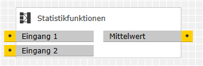
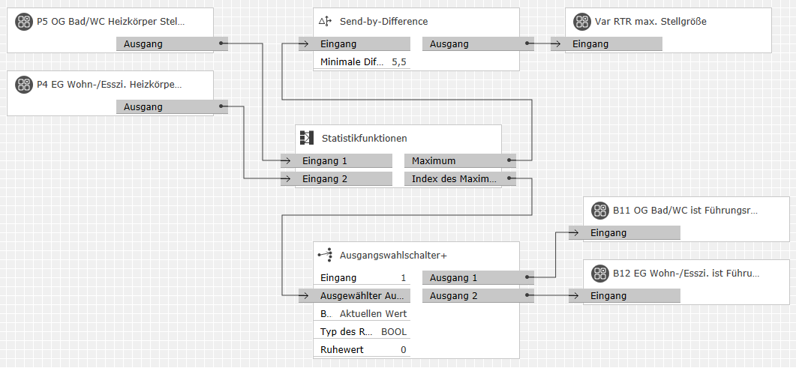

Dieser Baustein berechnet aus mehreren Eingangswerten eine oder zwei der folgenden mathematischen und statistischen Größen:
Die Berechnung der Standardabweichung betrachtet die Eingangswerte als Grundgesamtheit. (Bei Betrachtung als Stichprobe ergäbe sich ein anderer Wert.)
Die Anzahl der Eingänge ist zwischen 2 und 50 wählbar.
Bezeichnung |
Porttyp |
Beschreibung |
|---|---|---|
|
Eingang 1 |
Number |
Die hier empfangenen Werte bilden die Grundgesamtheit, deren Kenngrößen der Baustein berechnet.
Hinweis: |
Bezeichnung |
Porttyp |
Beschreibung |
|---|---|---|
|
Ausgang 1 |
Number |
Je nach den ausgewählten Funktionen – siehe Parameter "Funktion für Ausgang 1" bzw. "Funktion für Ausgang 2" – tragen diese Ausgänge entsprechende Beschriftungen und geben die berechneten Werte aus. |
Bezeichnung |
Porttyp |
Als Eingang zuschaltbar? |
Beschreibung |
|---|---|---|---|
|
Anzahl der Eingänge |
Integer |
nein |
Legt die Anzahl der Eingänge des Bausteins im Bereich 2..50 fest. |
|
Funktion für |
Auswahl |
nein |
Mit diesem Parameter wird eine der folgenden Funktionen für den Ausgang 1 gewählt:
|
|
Funktion für |
Auswahl |
nein |
Mit diesem Parameter wird – falls gewünscht – die Funktion für den Ausgang 2 gewählt. Neben der bereits für Ausgang 1 beschriebenen Auswahl stehen hier zusätzlich zur Verfügung:
Hinweis: |
Für eine bedarfsgeführte Heizungssteuerung soll die bereitgestellte Wärmeleistung nicht nur von der Außentemperatur, sondern auch vom tatsächlichen Wärmebedarf im Gebäude abhängen. Die dafür wichtigen Räume sind mit Raumtemperaturreglern ausgestattet, die stetig auf Ventilantriebe wirken. Der bestimmende Raum für den Wärmebedarf ist der mit der größten Stellgröße; er wird Führungsraum genannt.

Dazu erhält der Statistik-Baustein an seinen Eingängen die Stellgrößen von (jederzeit erweiterbaren) zwei Räumen. Er identifiziert den mit der größten Stellgröße als Führungsraum (Ausgang "Index des Maximalwerts"). Dessen Stellventil wird voll geöffnet. Der Ausgang "Maximum" des Statistik-Bausteins regelt im Gegenzug den Wärmeerzeuger so ab, dass der Führungsraum dennoch nur die vom Raumtemperaturregler angeforderte Wärmeleistung erhält. Der Send-By-Difference-Baustein verhindert, dass der Wärmeerzeuger zu oft eine neue Stellgröße erhält.
Nehmen wir an, das Bad im OG habe die Stellgröße 83% und das Wohnzimmer im EG die Stellgröße 59%. Dann erhält der Ausgang "Index des Maximalwerts" den Wert 0 und der Ausgang "Maximum" den Wert 83%. Der nachfolgende Ausgangswahlschalter+ sendet